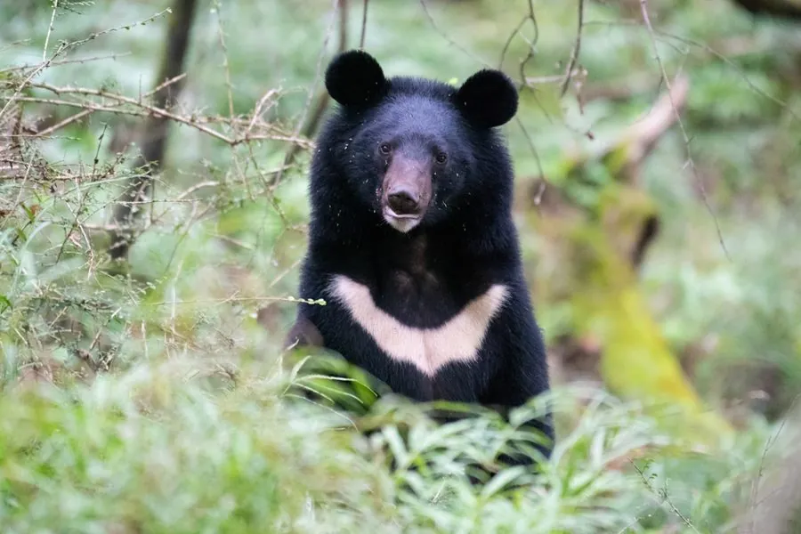

哺乳动物 · 动物界
亚洲黑熊 Ursus thibetanus

亚洲森林中的中型熊类，胸前有醒目的白色 V 形斑纹，善攀爬和游泳，冬季在树洞或岩穴中冬眠。
- 分类
- 门脊索动物门纲哺乳纲目食肉目科熊科属熊属
- 栖息环境
- 阔叶林、混交林与亚高山针叶林，偏好植被茂密的山地
- 地理分布
- 东亚、南亚和东南亚山地，中国从东北到西南多地有分布
- 保护级别
- IUCN 易危（VU）；中国国家二级保护动物
物种志
亚洲黑熊体长 1.2–1.9 米，肩高 0.7–1.0 米，体重 60–200 kg，雄性大于雌性。它的全身被毛乌黑发亮，吻部浅棕，胸前有一块醒目的白色月牙或 V 形斑纹；耳朵大而圆，被毛较长，四肢粗壮，爪弯而锋利，善于攀爬。
亚洲黑熊分布于东亚、南亚和东南亚的山地森林，从中国、日本、朝鲜半岛到印度、缅甸，栖息于阔叶林、混交林和亚高山针叶林。它是杂食动物，春季吃嫩芽、树叶，夏季取食浆果、昆虫和蜂蜜，秋季大量进食坚果和果实积累脂肪，也捕食小型兽类。亚洲黑熊多在晨昏活动，善攀爬和游泳，冬季在树洞、岩穴中冬眠，雌熊在冬眠中产仔，每胎 1–3 仔。因熊胆和熊掌贸易，野生种群受到严重威胁，中国将其列为国家二级保护动物。
形态与习性
- 食性嫩芽、树叶、浆果、坚果、昆虫与蜂蜜，也捕食小型兽类
- 体长1.2–1.9 m，肩高 0.7–1.0 m
- 体重60–200 kg，雄性大于雌性
- 寿命野外约 25 年
- 繁殖冬眠中产仔，每胎 1–3 仔
- 冬眠在树洞或岩穴中冬眠
- 攀爬爪弯而锋利，善攀爬树木
趣味知识
- 亚洲黑熊胸前的白色月牙斑纹是它最醒目的标志。
- 它善于攀爬和游泳，常在树上取食果实、躲避危险。
- 雌熊在冬眠期间产仔，幼仔出生时只有约 300 g。
- 因熊胆和熊掌贸易，亚洲黑熊在多地种群明显下降。